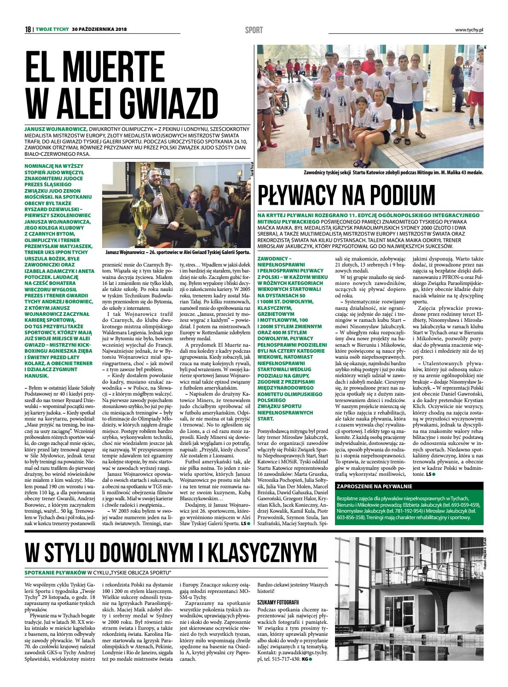
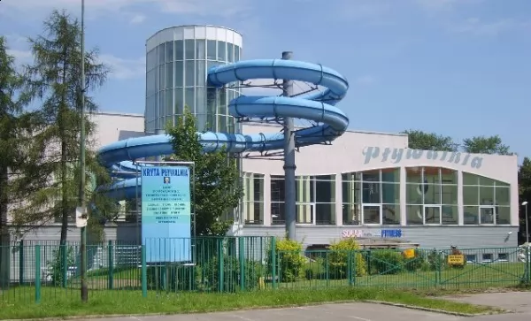

ARCHIWUM¶
zawody¶
| miejscowość | data | ranga | nazwa | zdjęcie |
|---|---|---|---|---|
| Tychy | 20-21.10.2018 | krajowe | XI Ogólnopolski Integracyjny Miting Pływacki Imienia Maćka Maika |  |
| Szczecin | 15-18.11.2018 | międzynarodowe | Winter Polish Open 2018 | |
| Zielona Góra | 14-16.06.2019 | krajowe | Letnie Mistrzostwa Polski niepełnosprawnych w pływaniu | |
| Częstochowa | 14-15.09.2019 | krajowe | VII Ogólnopolskie Integracyjne Zawody Osób Niepełnosprawnych w Pływaniu w ramach II rundy parapływackiego Grand Prix Polski | |
| Gorzów Wielkopolski | 27-29.09.2019 | krajowe | Puchar Polski III Runda Parapływackiego Grand Prix Polski Osób Niepełnosprawnych | |
| Tychy | 19-20.10.2019 | okręgowe | XII Ogólnopolski Integracyjny Miting Pływacki Imienia Maćka Maika |  |
| Łódź | 26-28.10.2019 | krajowe | Finał Parapływackiego Grand Prix Polski |
{kind=link}
{kind=link}
{kind=link}
{kind=link}
{kind=link}
inne¶
relacja z zawodów w Szczecinie¶
**Nasi Zawodnicy Startu Katowice odział Tychy w dniach 22-24.11.2019. Brali udział w Otwartych Zimowych Mistrzostwach Polski osób niepełnosprawnych w pływani
- Weronika która w swojej grupie łączonej S5-S6 zdobyła tytuł Mistrzyni Polski z wynikiem punktowym 1058.
- Dawid w grupie startowej S10 zajął 7 miejsce z notą punktową 1102.
- Kamil również zawodnik grupy startowej S10 zajął 13 miejsce z notą punktową 646.
- Krystian został Mistrzem Polski w grupie łączonej S4-S5 zdobył 680 punktów.
- Michał zajął 5 miejsce w grupie startowej S9 z wynikiem punktowym 1643.
- Maciej zajął 8 miejsce w grupie łączonej S 12-S13 z wynikiem punktowym 120.